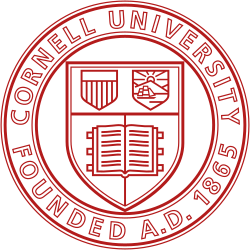

Recent Updates
Our paper was recently accepted to CVPR 2026!
About
I’m a Ph.D. student in Computer Science at Boston University, where I research deep learning and vision–language models with a focus on data and pretraining. Last May, I graduated from Cornell University with a degree in Computer Science, and I interned on the AI Development team at Moog, Inc. I enjoy working at the intersection of research and real-world impact, from multimodal AI systems to large-scale data and model deployment.
Publications
Baby-VLM-V2: Toward Developmentally Grounded Pretraining and Benchmarking of Vision Foundation Models
Shengao Wang*, Wenqi Wang*, Zecheng Wang*, Max Whitton*, Michael Wakeham, Arjun Chandra, Joey Huang, Pengyue Zhu, Helen Chen, David Li, Jeffrey Li, Shawn Li, Andrew Zagula, Amy Zhao, Andrew Zhu, Sayaka Nakamura, Yuki Yamamoto, Jerry Jun Yokono, Aaron Mueller, Bryan A. Plummer, Kate Saenko, Venkatesh Saligrama, Boqing Gong
CVPR 2026
Education
Boston University — Ph.D. in Computer Science
September 2025 – Present
Dean’s Fellowship · Advisor: Boqing Gong

Cornell University — B.S. in Computer Science
August 2021 – May 2025
magna cum laude · GPA: 3.85